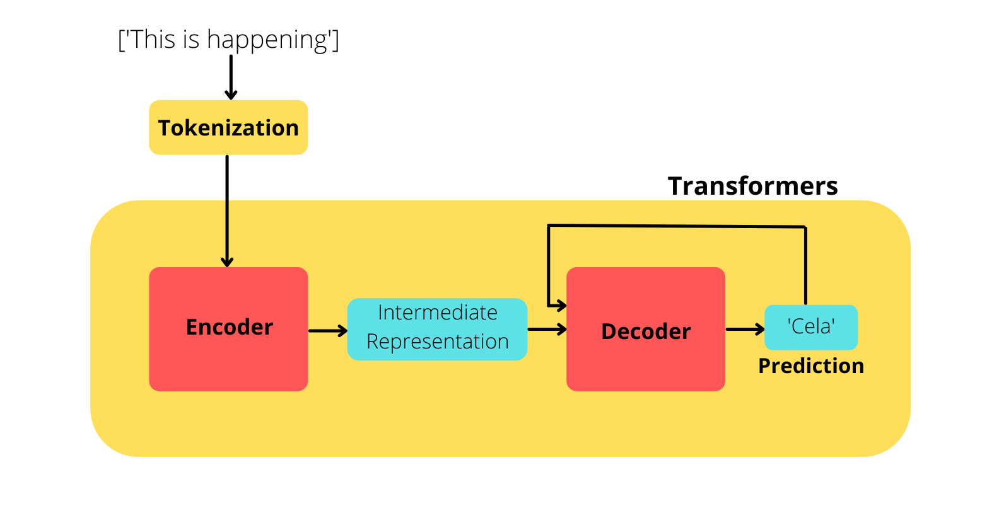

Machine translation¶
Unlike other chapters that we’ve completed so far, this will be a bit more familiar to all of you guys. We don’t need a separate section to discuss “What is machine translation?”. It’s just simple as this - given an english sentence, our machine learning model translates it to another language, say, Spanish.
In the above example, the inputs to our model will be an english sentence and the label will be it’s corresponding Spanish sentence.
Let’s directly jump into the dataset that we are going to use.
Dataset¶
Downloading the dataset¶
We will be using the news commentary dataset for our task, and specifically we will be using the english to french translation subset.
We will retrieve the dataset by specifying the languages we require for our task(english and french).
from datasets import load_dataset
raw_datasets = load_dataset("news_commentary", lang1="en", lang2="fr")
print(raw_datasets)
From the downloaded dataset, we will use 50% for training and 10% for evaluation purpose.
split_datasets = raw_datasets['train'].train_test_split(train_size=0.5, test_size=0.1, seed=42)
print(split_datasets)
Output:
DatasetDict({
train: Dataset({
features: ['id', 'translation'],
num_rows: 104739
})
test: Dataset({
features: ['id', 'translation'],
num_rows: 20948
})
})
Preprocessing the dataset¶
The model we are going to use is already trained for translating english to french, we will finetune it for our news commentary dataset.
Since our inputs and labels are sentences, we need to tokenize both of them before using for training.
We will load the tokenizer for our model as we did in other chapters:
from transformers import AutoTokenizer
# model checkpoint
checkpoint = "Helsinki-NLP/opus-mt-en-fr"
# load the tokenizer for the model checkpoint
tokenizer = AutoTokenizer.from_pretrained(checkpoint)
Here is a sample english sentence and it’s corresponding french translation from the training set:
sample = split_datasets['train']['translation'][0]
print(sample)
Output:
{
'en': 'It is important to note that these were unintended consequences of basically sensible policy decisions.',
'fr': 'Il est important de noter qu’il s’agit là de conséquences non voulues de décisions politiques raisonnables au départ.'
}
English(‘en’) part will be the inputs and french(‘fr’) part will be the labels for our model.
Let’s tokenize our inputs,
tokenizer(sample['en'])
Since our model is already trained for english to french translation, tokenizing the input english sentence is as simple as shown above. But for our french sentences, we need to let the tokenizer know that we are passing the labels, i.e, french sentences, otherwise, it will tokenize the sentence as if it were an english sentence.
The code for tokenizing the labels(french sentences) is shown below:
with tokenizer.as_target_tokenizer():
french_tokens = tokenizer(sample['fr'])
Now let’s wrap this inside a function and apply it to all the english-french sentences in our dataset. We will also truncate our sentences to a maximum length of 128:
max_length = 128
def tokenize(examples):
en_sentences = [sent['en'] for sent in examples['translation']]
fr_sentences = [sent['fr'] for sent in examples['translation']]
# tokenize english sentences
model_inputs = tokenizer(en_sentences, max_length=max_length, truncation=True)
# tokenize french sentences
with tokenizer.as_target_tokenizer():
labels = tokenizer(fr_sentences, max_length=max_length, truncation=True)
# add tokenized french sentences as labels
model_inputs['labels'] = labels['input_ids']
return model_inputs
Let’s apply the function to our train and test set:
tokenized_datasets = split_datasets.map(
tokenize,
batched=True,
remove_columns=['id', 'translation']
)
Creating the dataloaders¶
Since this is a sequence to sequence task, we will be using DataCollatorForSeq2Seq as our collator, which requires both the tokenizer and the model used, so we will load our pretrained model:
from transformers import AutoModelForSeq2SeqLM
model = AutoModelForSeq2SeqLM.from_pretrained(checkpoint)
Now let’s define our collator:
from transformers import DataCollatorForSeq2Seq
collate_fn = DataCollatorForSeq2Seq(tokenizer, model=model)
Let’s create our training and testing dataloader:
from torch.utils.data import DataLoader
batch_size = 32
# training dataloader
train_dl = DataLoader(
tokenized_datasets['train'],
batch_size=batch_size,
shuffle=True,
collate_fn=collate_fn
)
# test dataloader
test_dl = DataLoader(
tokenized_datasets['test'],
batch_size=batch_size,
shuffle=False,
collate_fn=collate_fn
)
Let’s see what information is present inside the dataloaders:
batch = next(iter(train_dl))
print(batch.keys())
Output:
dict_keys(['input_ids', 'attention_mask', 'labels', 'decoder_input_ids'])
As you can see, apart from input_ids, attention_mask and labels, we’ve one more key called decoder_input_ids which is added by our collator. decoder_input_ids(input ids corresponding to labels/french sentences) are used by the decoder part of the model during training.
Training the model¶
Now let’s get into training the model. We will set up the optimizer and move our previously loaded model and dataloaders to GPU using accelerate.
from torch import optim
from accelerate import Accelerator
opt = optim.AdamW(model.parameters(), lr=5.34e-6)
accelerator = Accelerator()
train_dl, test_dl, model, opt = accelerator.prepare(
train_dl, test_dl, model, opt
)
We will be using the BLEU score for monitoring the performance of our model. This is a commonly used metric for translation tasks, high scores imply that the translations made by the model are better compared to the target labels.
BLEU scores can be calculated using sacrebleu library which can be loaded as shown below,
Note
You may have to install the sacrebleu library before loading it. This can be done by running pip install sacrebleu from your terminal.
from datassets import load_metric
metric = load_metric('sacrebleu')
The metric require the predicted and target translations to be in text format. Let’s calculate the bleu score using an english sentence:
prediction = ['So it can happen anywhere.']
label = ['So it can happen anywhere.']
metric.compute(predictions=prediction, references=[label])
Output:
{
'score': 100.00000000000004,
'counts': [6, 5, 4, 3],
'totals': [6, 5, 4, 3],
'precisions': [100.0, 100.0, 100.0, 100.0],
'bp': 1.0,
'sys_len': 6,
'ref_len': 6
}
Of the above outputs, we will consider only the value of score for monitoring the performance of our model, perfect match of predictions and labels will yield a score of 100.
Now let’s write our training loop:
def run_training(train_dl):
model.train()
for batch in train_dl:
opt.zero_grad()
out = model(**batch)
accelerator.backward(out.loss)
opt.step()
During the inference in the real world, we will only have an english sentence that needs to be translated, we won’t have any target french sentence. So, this is how the inference will work,
Input english sentence: 'This is happening'
Target label/french translation: 'Cela se passe'
At a high level, this is how the whole process works:
As you can see from the figure, the encoder extracts the key informations and creates an intermediate representation of the input sentence. And then each time the decoder generates a word, that word along with the intermediate representations of the inputs are fed to the decoder to generate the next word.
As for our example, it would be something like this:
First, the decoder generates the word ‘Cela’ using the intermediate representations, then this word along with inermediate representations are passed to the decoder to generate the word ‘se’. Now this two words(‘Cela’ and ‘se’) along with the intermediate representation are fed to the decoder to predict ‘passe’.
Fortunately, our model has a .generate() method which can be used to generate each word one by one as described above. During training, this is taken care by attention masks which makes sure that the model does not see any decoder_input_ids that comes after the token it’s trying to predict.
Okay, before building our evaluation loop, we need to create a function that converts the predictions and target labels to text format for calculating the BLEU score.
The function will replace all -100 values with that of <pad> token, otherwise we will get an error while decoding.
def process_preds_and_labels(preds, labels):
preds = preds.detach().cpu()
labels = labels.detach().cpu()
# replace all -100 with the token id of <pad>
labels = torch.where(labels==-100, tokenizer.pad_token_id, labels)
# decode all token ids to its string/text format
decoded_preds = tokenizer.batch_decode(preds, skip_special_tokens=True)
decoded_labels = tokenizer.batch_decode(labels, skip_special_tokens=True)
# additional cleaning by removing begining and trailing spaces
decoded_preds = [pred.strip() for pred in decoded_preds]
decoded_labels = [[label.strip()] for label in decoded_labels]
return decoded_preds, decoded_labels
Now it’s time to write the evaluation loop:
import torch
def run_evaluation(test_dl):
model.eval()
with torch.no_grad():
for batch in test_dl:
# generate predictions one by one
preds = model.generate(
input_ids=batch['input_ids'],
attention_mask=batch['attention_mask'],
max_length=max_length,
)
# convert target labels and predictions to text format for computing the metric
preds, labels = process_preds_and_labels(preds, batch['labels'])
# add the target labels and predictions of this batch to metric calculator
metric.add_batch(predictions=preds, references=labels)
As you can see, we used the model.generate() method to mimic how the model will generate in the real world.
Let’s train the model for 3 epochs:
epochs = 3
for epoch in range(epochs):
run_training(train_dl)
run_evaluation(test_dl)
# calculate BLEU score on test set
test_acc = metric.compute()['score']
# save the model at the end of epoch
torch.save(model.state_dict(), f"model-v{epoch}.pt")
print(f"epoch: {epoch} test_acc: {test_acc}")
Testing the model¶
Let’s test the model with one example from our test set:
# testing data
sample = split_datasets['test'][0]['translation']
inputs = sample['en']
label = sample['fr']
inputs = tokenizer(inputs, return_tensors='pt')
out = model.generate(**inputs)
# convert token ids to string
with tokenizer.as_target_tokenizer():
decoded_out = tokenizer.decode(out[0], skip_special_tokens=True)
print("Label: \n", label)
print("Prediction: \n", decoded_out)
Output:
Label:
Il est possible que la BNS reconnaisse ce que les autres banques centrales font sans le dire.
Prediction:
Il se peut que la BNS reconnaisse simplement ce que les autres banques centrales ne font pas.
The words are not exactly the same, but they have the same meaning when translated to english using Google translate.
Wohoo!! We have a working machine translator🔥.